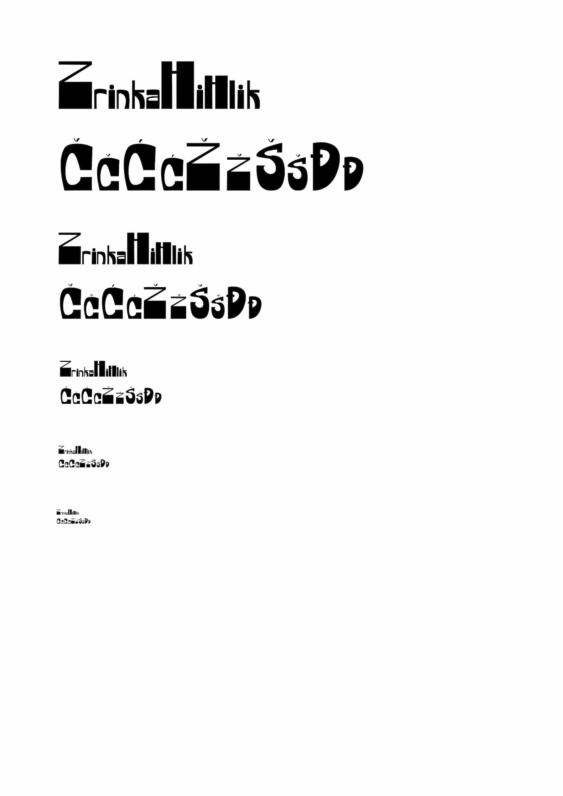
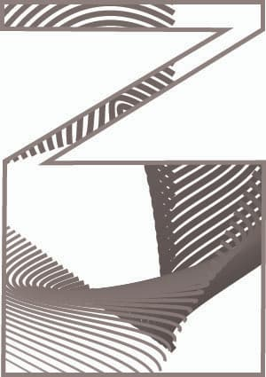
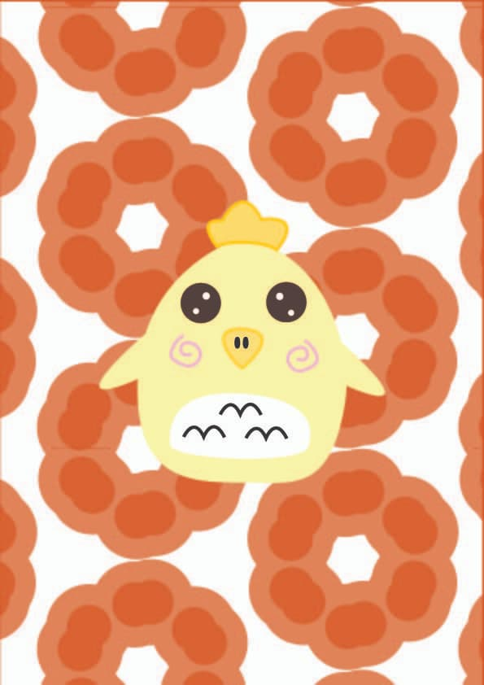
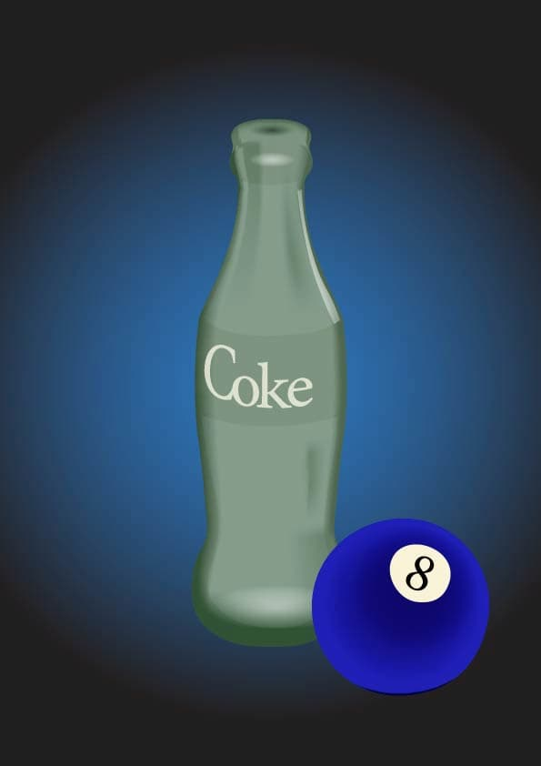
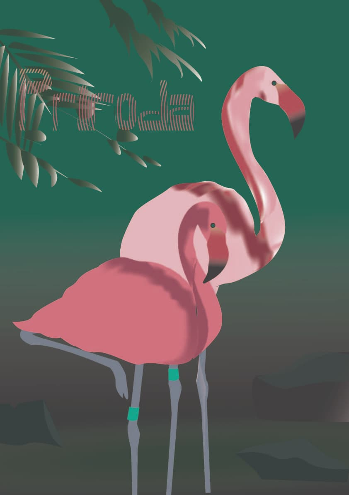
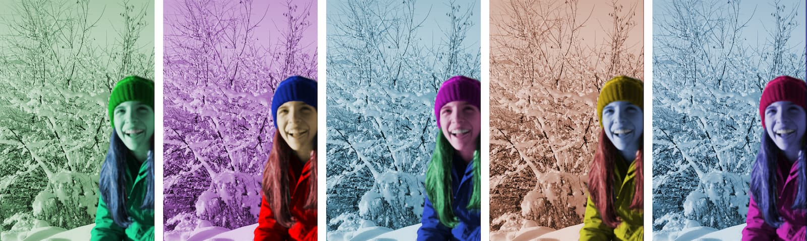
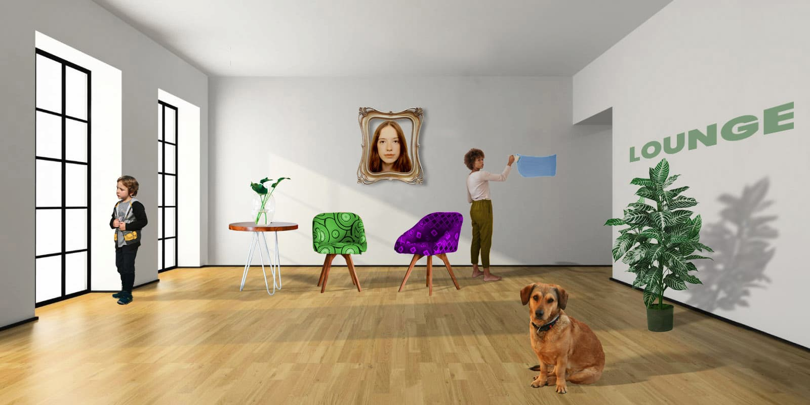

Ovdje se nalaze sve vježbe iz kolegija Digitalni multimedij 1 koje sam odradila tijekom ovog semestra.
U ovoj vježbi smo radili svoj font u Fontgrapheru
U ovoj vježbi smo unutar prvog slova svog imena umetali dizajn s krivuljama pomoću Blend alata.
U ovoj vježbi smo radili svoj objekt u Illustratoru s Pen alatom, a pozadinu smo uredili pomoću uzorka koji smo sami izradili.
U ovoj vježbi smo radili složeni objekt na koji smo primjenjivali transparenciju i gradijente.
U ovom projektnom zadatku smo dobili predložak fotografije koju smo pomoću alata nacrtali u Illustratoru. Također smo morali ispisati riječ priroda i primijeniti sve alate koje smo koristili u vježbama iz vektorske grafike.
U ovoj vježbi smo odabrali jednu od ponuđenih fotografija koje su imale oštećenja pa smo ju morali retuširati pomoću alata u Photoshopu.

U ovoj vježbi smo morali uzeti sliku sebe te ju pomoću alata za koloriranje obojati drugačije nego u originalu u pet različitih primjera.
U ovoj vježbi smo koristili alate za fotomontažu. Dobili smo određene fotografije od kojih smo odabrali baznu, a ostale umetali u nju.
 Projektni zadatak 2
Projektni zadatak 2
U ovom projektnom zadatku smo koristili sve naučene alate koloriranja, retuširanja i fotomontaže.
U ovoj vježbi smo morali izraditi svoj cinemagraf, što označava gif u kojemu se samo određeni dio pomiče.

U ovoj vježbi sam od odabranih videa u programu Premiere Pro napravila novi.
U ovoj vježbi sam napravila svoju prvu stranicu.
Moja stranica